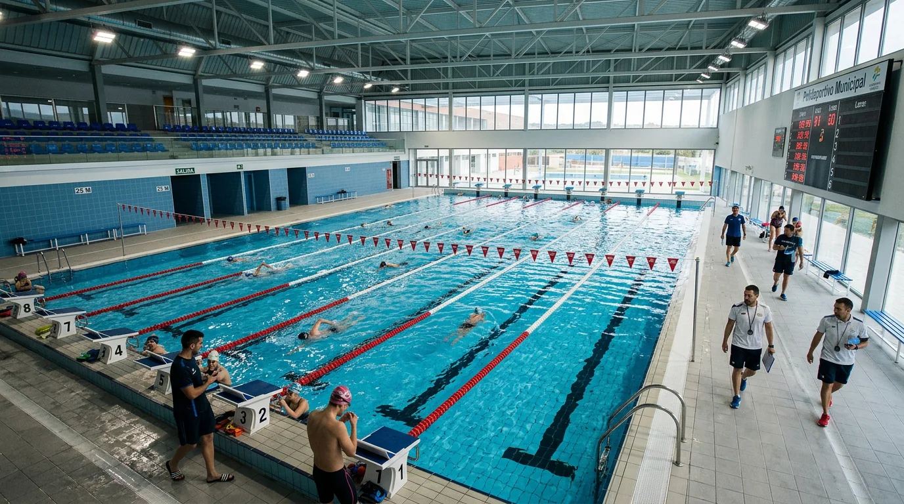

Construcción de piscinas e instalaciones acuáticas para polideportivos e instalaciones deportivas.

Las piscinas para polideportivos o instalaciones deportivas son proyectos de gran envergadura que requieren de una gran organización y logística, además de un grupo de trabajo por lo general más amplio. En Cuesa Sport tenemos la capacidad de realizar trabajos a cualquier escala para diferentes clientes y entornos.
Como en cualquier tipo de piscina, utilizamos la técnica del gunitado. Dicha técnica de construcción se utiliza para construir una piscina enterrada, en la que se rocía hormigón a presión, que es la solución perfecta para la impermeabilización. Hay numerosos acabados disponibles; el más popular es el acabado en mosaico de vidrio. Esta actividad de trabajo en estos proyectos requiere de gran profesionalidad y experiencia.
No hace falta recalcar la gran dimensión que albergan dichos proyectos en cuanto a medidas; por ello son necesarios los incrementos de materiales, maquinaria, productos y personal para unos resultados excelentes. Generalmente, la dimensión únicamente del recinto acuático artificial oscila entre los 30-50 metros de largo x 15-20 metros de anchura. Por ello se requiere casi el doble de recursos que para cualquier otra piscina. Aún así, no son suficientes inconvenientes para que a día de hoy nunca hayamos dicho que no a una construcción de semejantes magnitudes y complejidades.
Salvo que dicho polideportivo sea construido a la par que se levanta el recinto acuático artificial, trabajamos a contrarreloj. Sabemos lo que es el cierre de instalaciones para un polideportivo por reforma. Por este motivo somos partidarios de trabajar muy sacrificadamente para obtener los mejores resultados en un intervalo de tiempo lo más corto posible, favoreciendo así la satisfacción de nuestro cliente y, a su vez, la satisfacción de los clientes de nuestro cliente.
Las prisas no son buenas, pero los retos sí. En Cuesa Sport nos proponemos la excelencia en cualquiera de nuestros proyectos a esta escala, lo que simboliza rapidez y detalles en los acabados. La experiencia nos propicia sabiduría, y gracias a la sabiduría analizamos y optimizamos todos los procesos de construcción y reforma de piscinas en interiores o polideportivos. Somos pioneros en construcción de piscinas para polideportivos o cualquier tipo de pista deportiva dentro de los mismos (fútbol, tenis, pádel). Si el proyecto es ambicioso y complejo, déjalo en buenas manos. Nuestra experiencia realizando obras de esta magnitud nos avala.